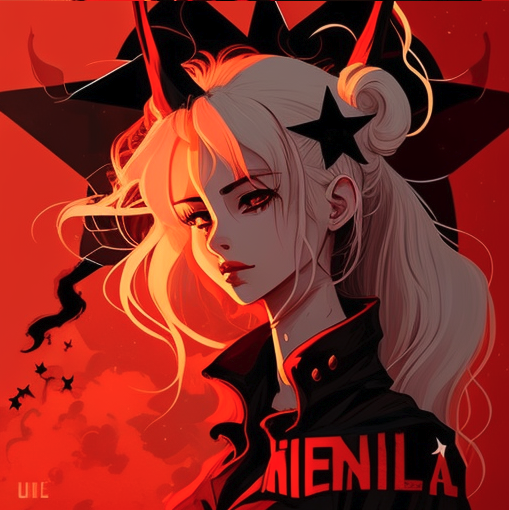

<article class="user-profile">
    <div class="card">
        <div class="btn-send">
            <figure class="send">
                
            </figure>
        </div>
        <div class="card-image">
            <figure class="profil-image">
                
            </figure>
        </div>
        <div class="card-content">
            <div class="media">
                <div class="media-content has-text-centered">
                    <p class="title">William FLORENTIN</p>
                    <p class="subtitle">Chef de projet</p>
                </div>
            </div>

            <div class="content">
                Rei is believed to be responsible for her murder, as wounds associated with Nanto Suicho Ken are found
                on her corpse,
                and Rei is forced to go on the run from the city's elite guardians, the Valkyries, led by Frieda.
            </div>
        </div>
    </div>
    <div class="footer-user-profil">
        <div class="list-btn-social">
            <a href="#" class="button is-link is-rounded is-small">
                <span class="icon">
                    <i class="fab fa-facebook-f"></i>
                </span>
            </a>
            <a href="#" class="is-link is-rounded is-small">
                <span class="icon">
                    <i class="fab fa-twitter"></i>
                </span>
            </a>
            <a href="#" class="is-link is-rounded is-small">
                <span class="icon">
                    <i class="fab fa-instagram"></i>
                </span>
            </a>
            <a href="#" class="is-link is-rounded is-small">
                <span class="icon">
                    <i class="fab fa-linkedin-in"></i>
                </span>
            </a>
        </div>
    </div>
</article>